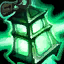

Thresh képességei

Passzív képesség: Kárhozat
Thresh képes begyűjteni a közelében meghalt ellenségek lelkeit, ami által tartósan erősebbé válik a páncélja és a varázsereje.

Q képesség: Halálos ítélet
Thresh láncra ver egy ellenséget, és maga felé húzza. A képesség második aktiválásakor Thresh az ellenfélhez rántja magát.

W képesség: Sötét átjáró
Thresh kivet egy lámpást, amely megvédi a közeli szövetséges hősöket a sebzéstől. A szövetségesek a lámpásra kattintva Thresh-hez rohanhatnak.

E képesség: Nyúzás
Thresh rákészül a támadásaira, és minél több idő telik el két csapása között, annál többet sebez. Aktiváláskor Thresh a láncával végigsöpör maga előtt, és az eltalált ellenségeket a csapás irányába löki.

R képesség: A doboz
Börtönfal, amely lelassít és sebez, ha széttörik.
Ugrás az elejére